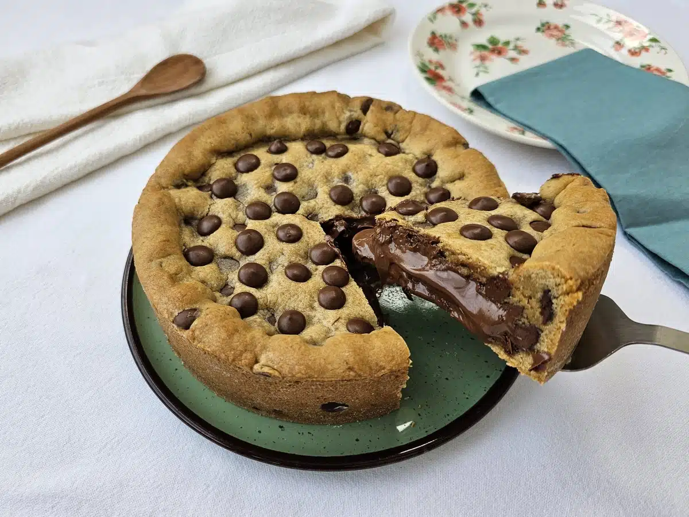

Sobre a Receita

Figura 1: Torta de cookie artesanal recheada, assada na forma de fundo removível.
Nível de crocância: 90%
Tempo de forno: (30 min completos)
Ingredientes
Massa do Cookie
- 100g de manteiga sem sal em ponto de pomada
- 1/2 xícara de açúcar mascavo
- 1/3 xícara de açúcar refinado
- 1 ovo grande
- 1 colher de chá de essência de baunilha
- 2 xícaras de farinha de trigo
- 1/2 colher de chá de fermento em pó
- 150g de gotas ou pedaços de chocolate meio amargo
Recheio
- 300g de creme de avelã (Nutella) ou brigadeiro firme
Utensílio Principal
- Forma redonda de fundo removível (20 cm de diâmetro)
Modo de Preparo
Clique aqui para abrir o passo a passo da Torta
- Em uma tigela, misture a manteiga com o açúcar mascavo e o açúcar refinado até formar um creme.
- Adicione o ovo e a essência de baunilha, misturando bem.
- Acrescente a farinha de trigo e o fermento peneirados, misturando até formar uma massa
homogênea.
- Incorpore as gotas de chocolate à massa.
- Unte a forma de fundo removível com manteiga e polvilhe farinha (ou cacau em pó).
- Forre o fundo e as laterais da forma com pouco mais da metade da massa.
- Adicione o recheio de creme de avelã ou brigadeiro no centro.
- Abra o restante da massa e cubra a torta, selando bem as bordas nas laterais.
- Asse em forno pré-aquecido a 180°C por cerca de 30 minutos até dourar.
- Aguarde esfriar completamente antes de soltar o fundo removível e desenformar.